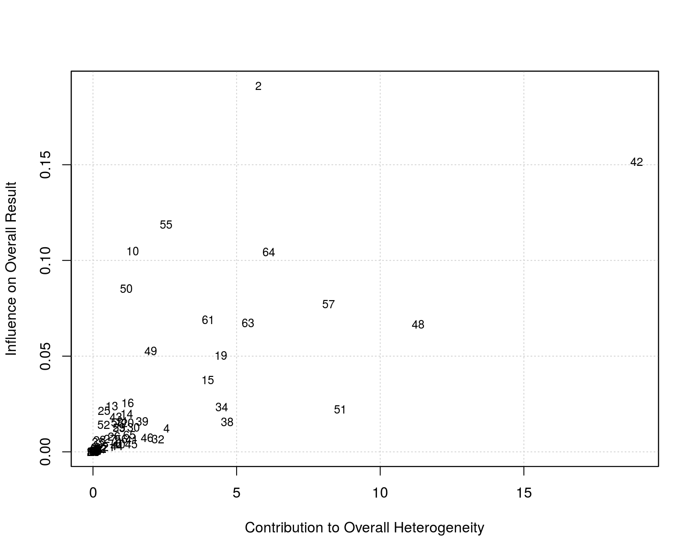
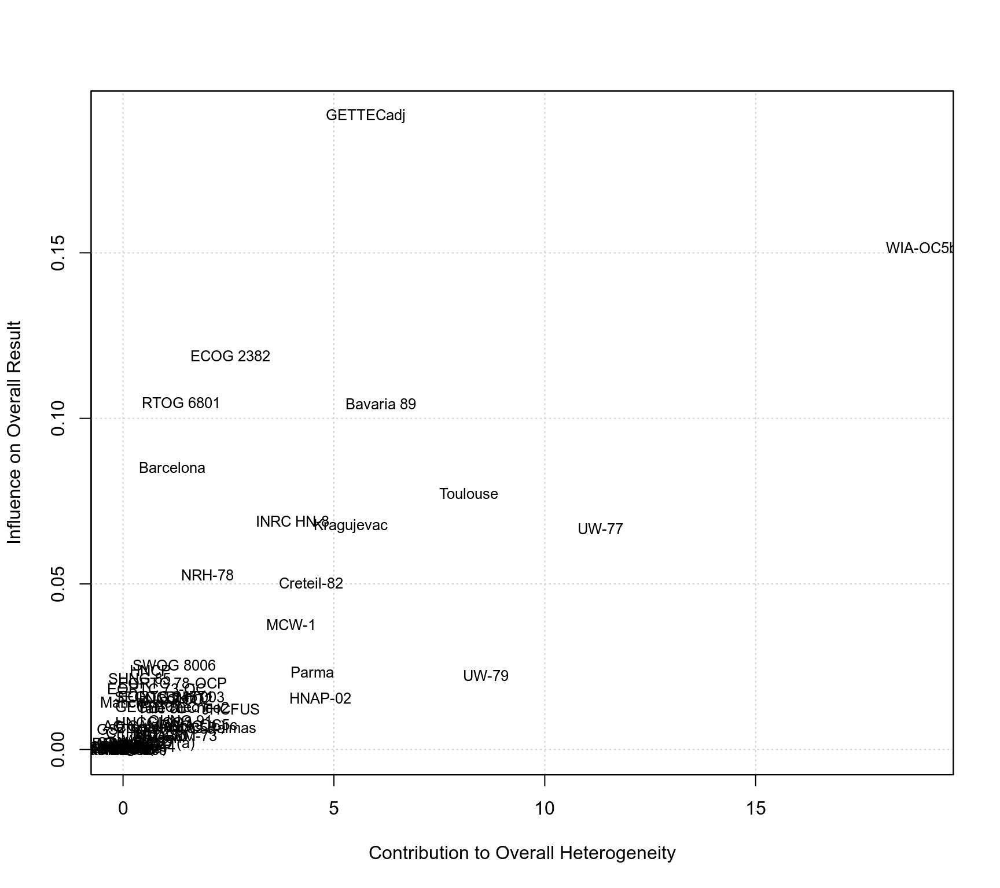
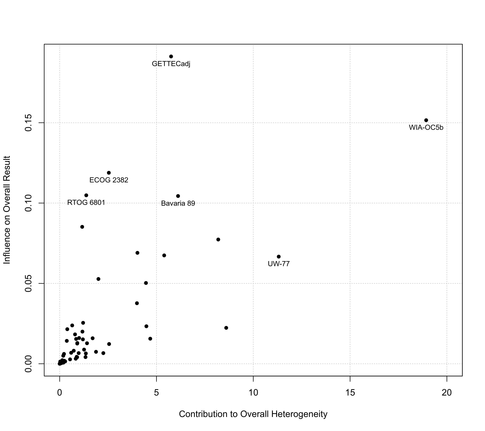

baujat.RdFunction to create Baujat plots for objects of class "rma".
baujat(x, ...)
# S3 method for rma
baujat(x, xlim, ylim, xlab, ylab, cex, symbol="ids", grid=TRUE, progbar=FALSE, ...)an object of class "rma".
x-axis limits. If unspecified, the function sets the x-axis limits to some sensible values.
y-axis limits. If unspecified, the function sets the y-axis limits to some sensible values.
title for the x-axis. If unspecified, the function sets an appropriate axis title.
title for the y-axis. If unspecified, the function sets an appropriate axis title.
symbol/character expansion factor.
either an integer to specify the pch value (i.e., plotting symbol), or "slab" to plot the study labels, or "ids" (the default) to plot the study id numbers.
logical to specify whether a grid should be added to the plot. Can also be a color name.
logical to specify whether a progress bar should be shown (the default is FALSE).
other arguments.
The model specified via x must be a model fitted with either the rma.uni, rma.mh, or rma.peto functions.
Baujat et al. (2002) proposed a diagnostic plot to detect sources of heterogeneity in meta-analytic data. The plot shows the contribution of each study to the overall \(Q\)-test statistic for heterogeneity on the x-axis versus the influence of each study (defined as the standardized squared difference between the overall estimate based on an equal-effects model with and without the study included in the model fitting) on the y-axis. The same type of plot can be produced by first fitting an equal-effects model with either the rma.uni (using method="EE"), rma.mh, or rma.peto functions and then passing the fitted model object to the baujat function.
For models fitted with the rma.uni function (which may be random-effects or mixed-effects meta-regressions models), the idea underlying this type of plot can be generalized as described by Viechtbauer (2021): The x-axis then corresponds to the squared Pearson residual of a study, while the y-axis corresponds to the standardized squared difference between the predicted/fitted value for the study with and without the study included in the model fitting.
By default, the points plotted are the study id numbers, but one can also plot the study labels by setting symbol="slab" (if study labels are available within the model object) or one can specify a plotting symbol via the symbol argument that gets passed to pch (see points for possible options).
A data frame with components:
the x-axis coordinates of the points that were plotted.
the y-axis coordinates of the points that were plotted.
the study id numbers.
the study labels.
Note that the data frame is returned invisibly.
Baujat, B., Mahe, C., Pignon, J.-P., & Hill, C. (2002). A graphical method for exploring heterogeneity in meta-analyses: Application to a meta-analysis of 65 trials. Statistics in Medicine, 21(18), 2641–2652. https://doi.org/10.1002/sim.1221
Viechtbauer, W. (2010). Conducting meta-analyses in R with the metafor package. Journal of Statistical Software, 36(3), 1–48. https://doi.org/10.18637/jss.v036.i03
Viechtbauer, W. (2021). Model checking in meta-analysis. In C. H. Schmid, T. Stijnen, & I. R. White (Eds.), Handbook of meta-analysis (pp. 219–254). Boca Raton, FL: CRC Press. https://doi.org/10.1201/9781315119403
### copy data from Pignon et al. (2000) into 'dat'
dat <- dat.pignon2000
### calculate estimated log hazard ratios and sampling variances
dat$yi <- with(dat, OmE/V)
dat$vi <- with(dat, 1/V)
### meta-analysis based on all 65 trials
res <- rma(yi, vi, data=dat, method="EE", slab=trial)
### create Baujat plot
baujat(res)

### some variations of the plotting symbol
baujat(res, symbol=19)
baujat(res, symbol="slab")

### label only a selection of the more 'extreme' points
sav <- baujat(res, symbol=19, xlim=c(0,20))
sav <- sav[sav$x >= 10 | sav$y >= 0.10,]
text(sav$x, sav$y, sav$slab, pos=1, cex=0.8)
